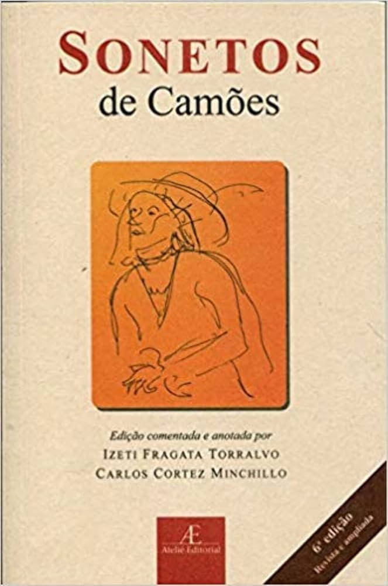

SOBRE O LIVRO
"Sonetos de Camões" é uma coletânea das composições poéticas de Luís de Camões, considerado um dos maiores escritores da língua portuguesa. Seus sonetos exploram temas como o amor idealizado, a passagem do tempo, o destino e a efemeridade da vida, com forte influência do classicismo e do humanismo renascentista. A riqueza estilística e a profundidade emocional fazem de sua poesia um marco na literatura.
SOBRE O AUTOR
Luís de Camões (1524?-1580) foi um poeta português, autor de Os Lusíadas e de uma vasta obra lírica. Sua poesia une refinamento formal e emoção intensa, consolidando-o como um dos maiores nomes da literatura universal.
Data da primeira publicação: 1595
Autor: Luís de Camões
Gênero: Poesia